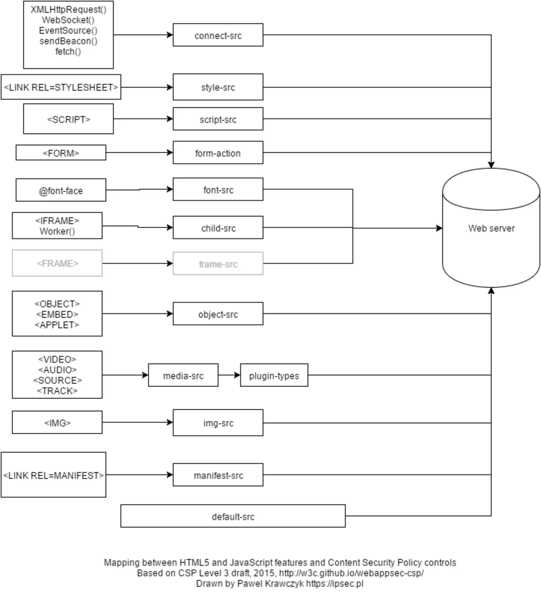

短答
内容安全策略告诉浏览器哪些来源可以提供脚本、样式、图片和其他资源。
图把功能映射到指令：样式表通向 style-src，脚本通向 script-src，图片通向 img-src，字体通向 font-src，还有其他，箭头指向一台 Web 服务器。来源图上的说明把这张画和一份较旧的草案联系在一起。本文把它用作这个概念的地图，不是要粘贴的配置，也不是当前的分数。
定义
策略是一个响应头或一个 meta 元素。如果它挡住了你自己主机上的样式表，获取到的 HTML 就没有样式。如果它挡住的脚本只是增强菜单，HTML 底座应该仍然能用。如果它挡住了唯一一份产品文字，因为那段文字是由被挡的脚本注入的，文档就失败了。CSP 不是 robots.txt。爬虫可以获取 HTML，同时浏览器拒绝资源。两边都要检查。
渲染对爬虫意味着什么变化
允许文档需要的资源，如果策略可能挡住脚本，就把主要文字留在 HTML 里。
策略变更后，阅读一条产品 URL 在浏览器里的拒绝信息，并点名那条指令。被挡的第三方主机和被挡的一方样式表不是一回事。不要因为一张图画了很多箭头，就把策略放宽到允许所有主机。加上你打算用来提供文件的那个主机。图里的服务器圆柱不是你的源站，除非你检查过。

要检查什么
- 如果页面使用一方 CSS 和图片，它们被允许
- 主要文字仍在 HTML 中
- 被挡的资源按它的指令被点名
- 策略不是从图上抄来的
- 加载一条产品 URL，并检查过控制台或网络记录
一个结构示例
新策略允许来自一个主机的脚本，却漏掉了提供产品 CSS 的主机。页面没有样式，布局塌掉，而 HTML 获取结果里仍有 H1。修复是把该主机加进 style-src，并确认 CSS 请求。这张图没有被粘贴成响应头。被挡住的从来不是 H1。
它不声称什么
内容安全策略不保证排名或引用。
Mika Visibility 把它归到哪里
Mika Visibility 把渲染当作 SEO 健康问题：当模板依赖 JavaScript 时，重要 HTML 能否在有脚本和无脚本两种情况下被获取并比较。这种比较不是 GEO 审计，也不是市场覆盖计划。发现要附在样例 URL 上。模板改完之后的再审计，用来确认修复。
这张图是一份较旧草案上的地图。要检查的是你自己响应上的策略。
常见问题
内容安全策略告诉浏览器什么？
内容安全策略告诉浏览器哪些来源可以提供脚本、样式、图片和其他资源。
什么应该留在 HTML 里？
允许文档需要的资源，如果策略可能挡住脚本，就把主要文字留在 HTML 里。
内容安全策略能保证排名吗？
内容安全策略不保证排名或引用。
下一步
做一次结构化的 SEO + GEO 审计，查看健康发现、增长缺口和可以执行的蓝图。
更清晰的实体、答案、证据和上下文，会让页面更容易被理解与引用。任何回答产品中的结果都不作保证。